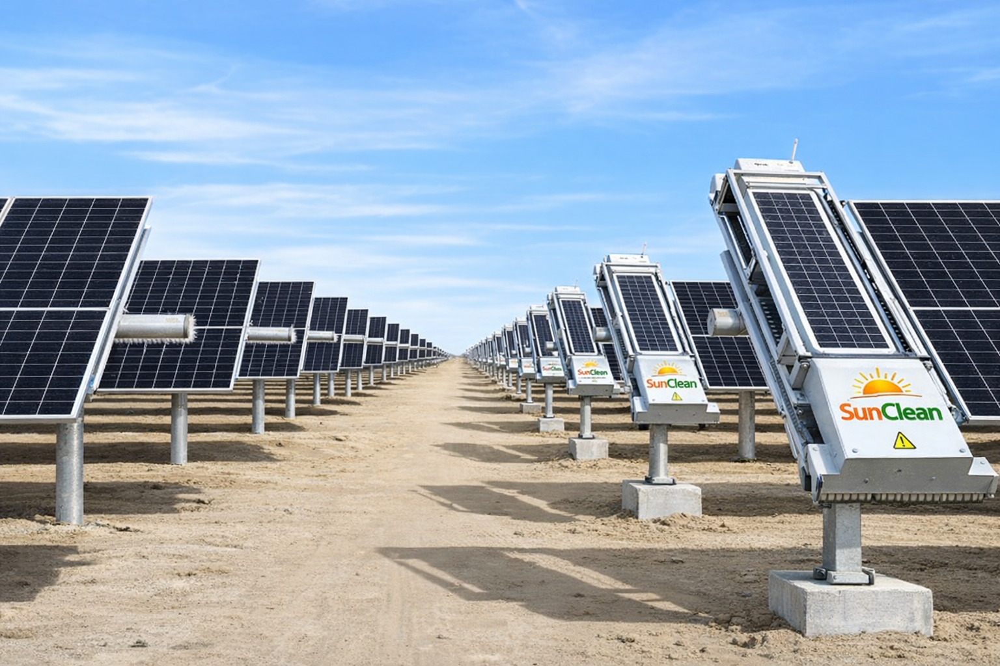
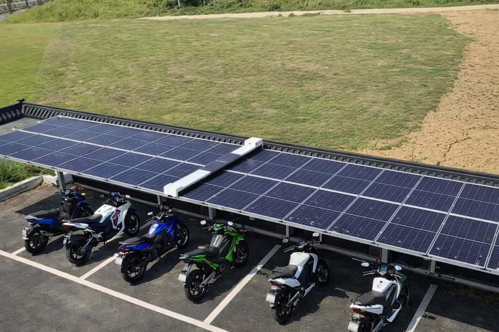

Robotic solar panel cleaning is not just about reducing manual work. It is about protecting generation, reducing losses, and improving the long-term profitability of your solar asset.
Use this quick estimator to understand the possible business value of switching to robotic cleaning.
₹ 0
₹ 0
Enter your values to estimate
Dust, dirt, and surface contamination directly reduce solar panel efficiency. When cleaning is delayed, inconsistent, or dependent on labour availability, plant performance suffers.
SunClean Tech helps plant owners and operators improve value through:

Cleaner modules allow better solar exposure, helping reduce avoidable generation losses caused by soiling.
Lower reliance on repetitive manual cleaning teams improves operational consistency and planning.
Depending on the model used, robotic cleaning can significantly reduce water consumption versus traditional cleaning methods.
A repeatable cleaning process helps improve long-term plant management and operational discipline.
Every solar plant is different. But in most cases, value is created when robotic cleaning helps prevent output loss and reduces recurring operational inefficiencies.
Even small efficiency improvements can translate into meaningful annual generation gains across large MW installations.
In regions with frequent dust accumulation, higher cleaning frequency can improve plant performance consistency.
Plants facing labour shortage or high cleaning manpower costs can benefit from robotic assistance and automation.

Solar assets are long-life infrastructure investments. Short-term cleaning decisions can create long-term performance losses.
SunClean Tech helps operators think beyond day-to-day cleaning and focus on:
Our team can help you evaluate the right cleaning system based on your plant layout, operating conditions, and O&M goals.